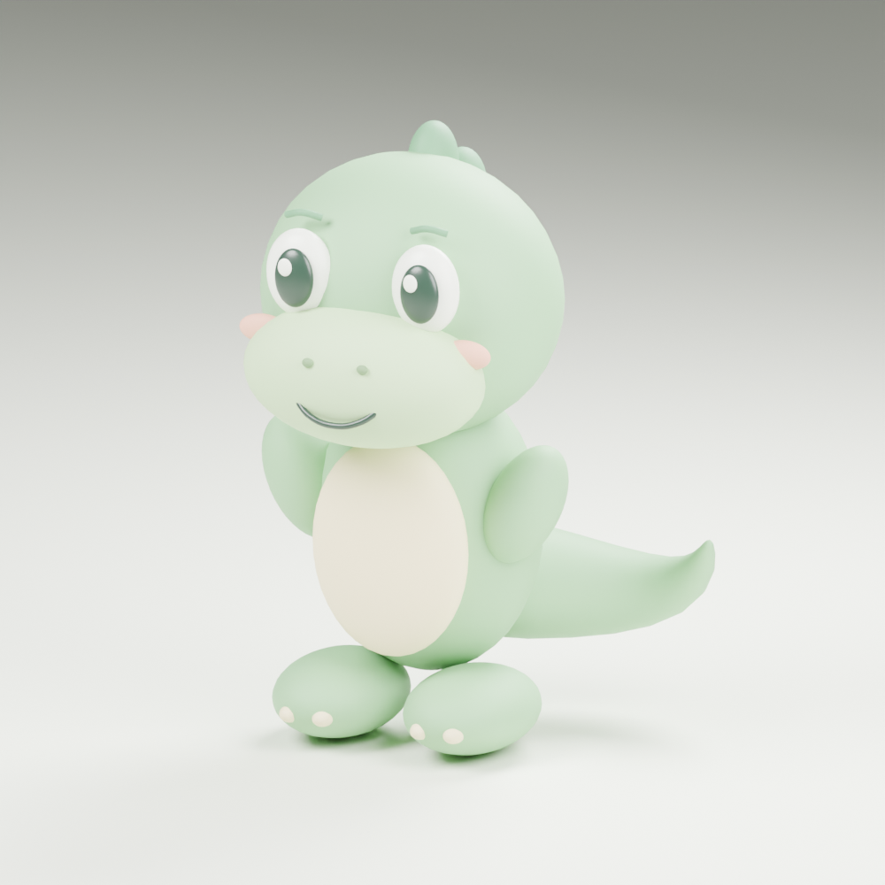

From a sketch to a little friend
Now in
three dimensions.
The first sculpt of our gentle dinosaur buddy. A rounded silhouette, a cream belly, tiny feet, and a curious little smile.
About 20 cm tallOriginal geometryStatic prototype
These are renders of the actual 3D model, not interactive AR. Rigging, animation, and phone testing come next.
